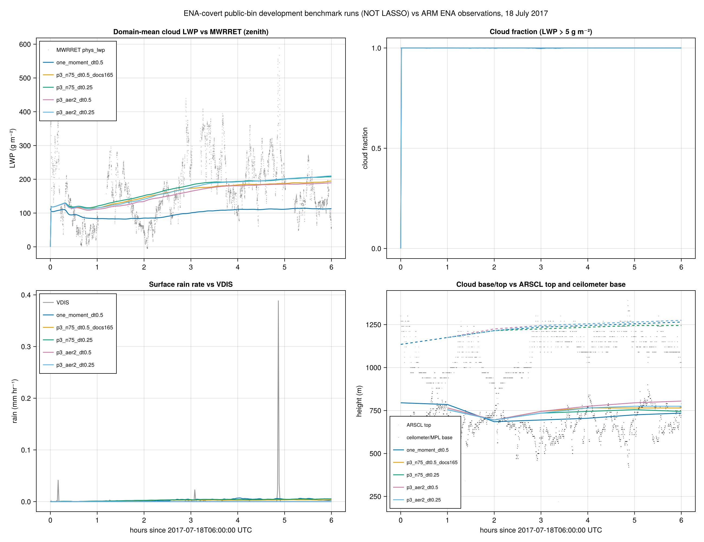
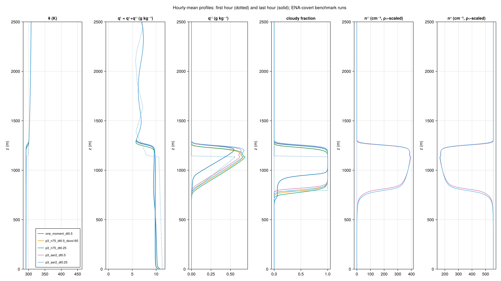
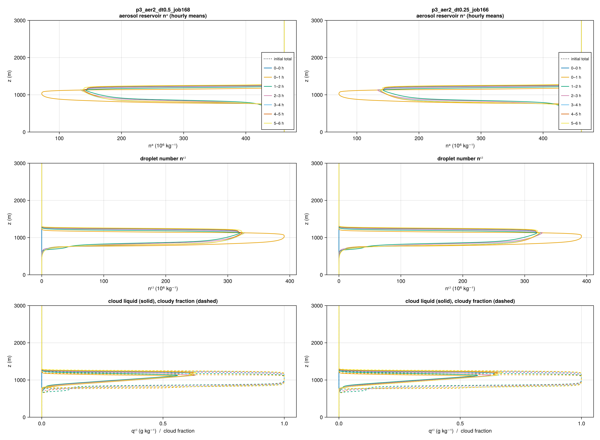
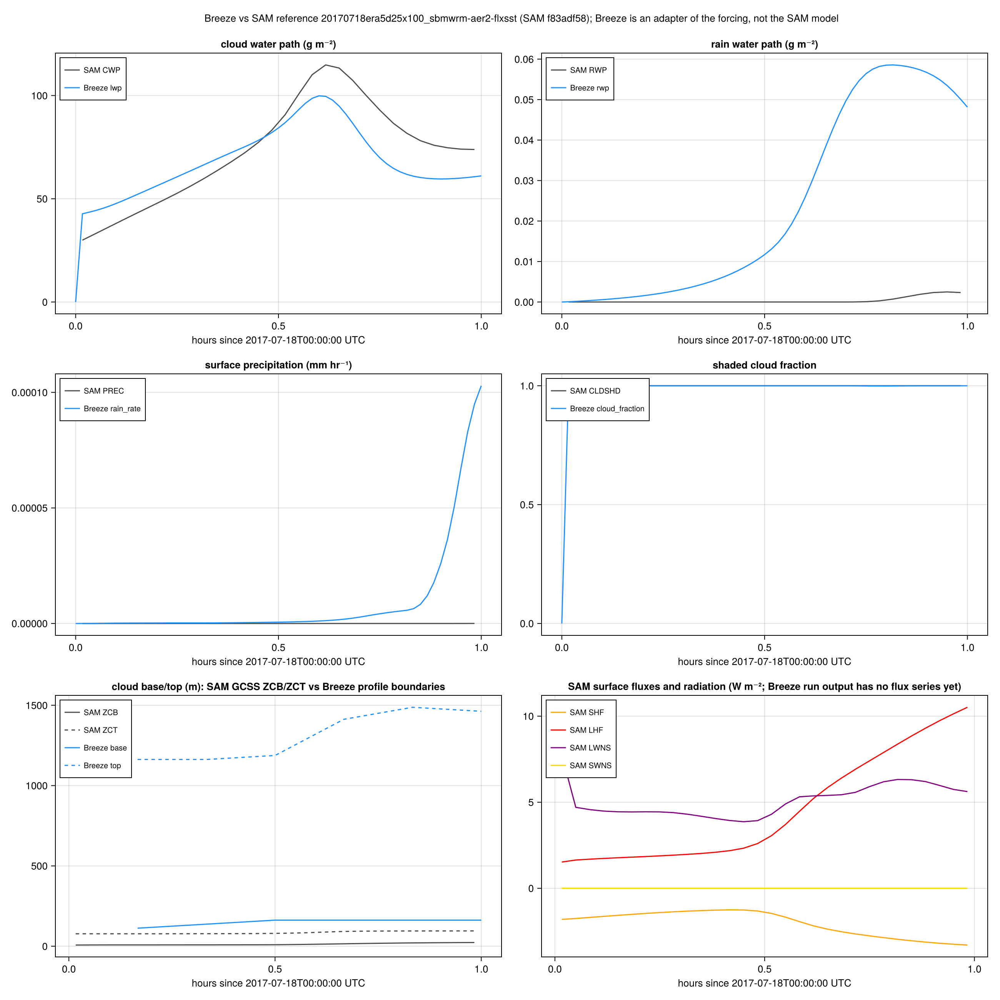
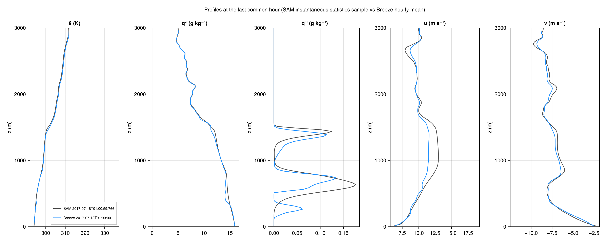
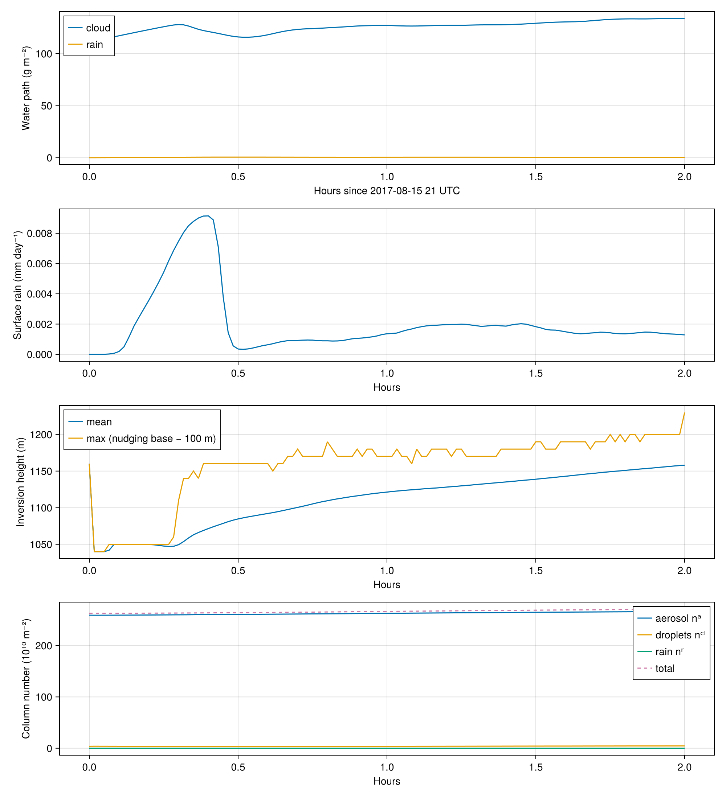
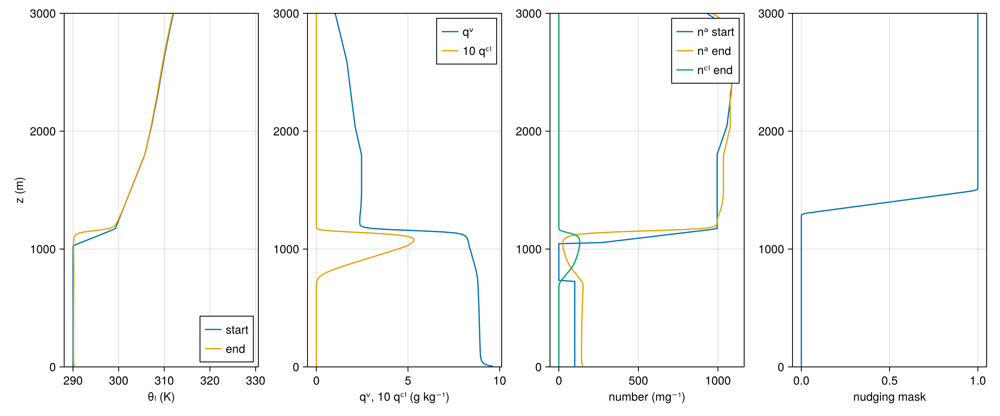
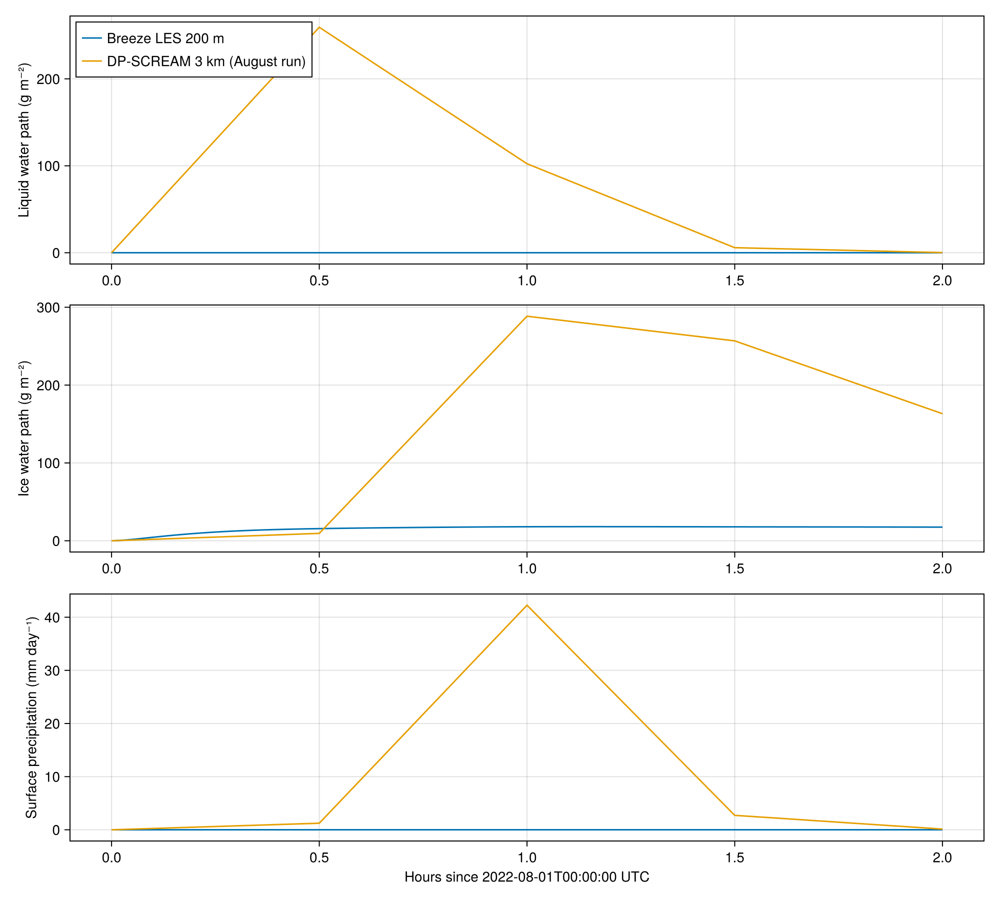
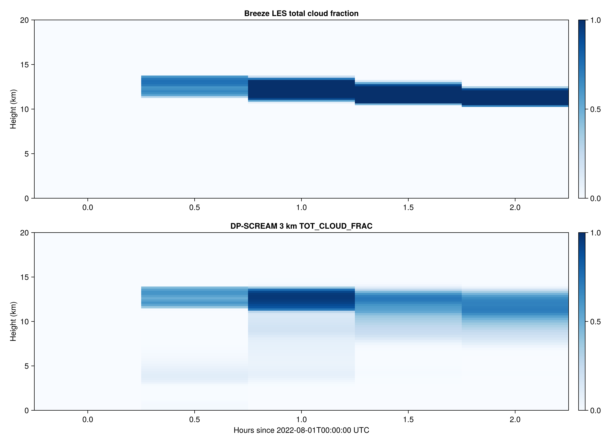
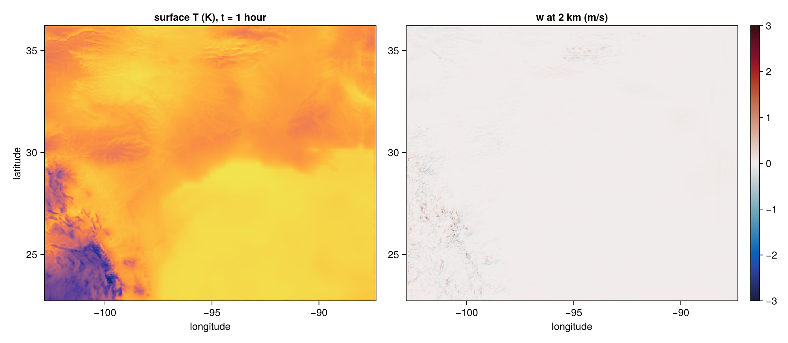

Campaign results (October 2026)
Four cases were implemented and launched on wpcluster on 7–8 October 2026. This page summarizes the completed runs and the analyses made against published results and ARM observations; the per-case pages carry the details and the explicit departures from each protocol. Figures are Makie output of the runs named in their captions. A run that completed is not a validated result; where a reference exists, the comparison is stated.
ENA-covert (public Covert et al. 2022 bin benchmark)
Five six-hour runs on 256×256×192 at 35 m (jobs 165–169), all finite. Against the ARM ENA observations for 2017-07-18, 06–12 UTC:
| quantity | observed | one-moment | P3-N75 (Δt 0.5 / 0.25 s) | P3-aer2 (Δt 0.5 / 0.25 s) |
|---|---|---|---|---|
| LWP, mean (g m⁻²) | 168 ± 13 (MWRRET) | 100 | 160 / 169 | 155 / 165 |
| rain, mean (mm h⁻¹) | 0.0015 (VDIS) | 0.0029 | 0.0023 / 0.0031 | 1×10⁻⁵ |
| cloud top at 12 UTC (m) | ≈ 1090 (ARSCL) | 1265 | 1245 | 1275 |
| in-cloud droplet number (cm⁻³) | 75 (airborne) | — | 75 (prescribed) | 394 / 425 |
P3-N75 reproduces the observed LWP within its uncertainty and the drizzle within a factor of two; every member puts cloud top about 150 m too high. The P3-aer2 droplet number is unphysical: the LASSO aer2 spectrum was applied to a 75 cm⁻³ case and Breeze's activation has no supersaturation cap. The aerosol audit gives the causes; the capped relaunch (job 244) reproduces the bin scheme's aer2 ceiling (279 cm⁻³) but not the Covert case, so a labelled p3_covert_n75 configuration was built and relaunched.



ENA-LASSO (official member 20170718era5d25x100_sbmwrm-aer2-flxsst)
The member named in the plan does not exist at ARM; the adopted bin warm-cloud member differs only in the forcing sampling box. The bundle (ARM order 284988, SAM v6.10.3 at source hash f83adf58) validates after the adapter learned SAM's per-column surface fluxes and the namelist Coriolis parameter. First hour against the SAM member statistics:
| first hour | SAM | Breeze (job 243) |
|---|---|---|
| cloud water path (g m⁻²) | 72.8 | 67.3 |
| cloud fraction | 1.00 | 0.98 |
| rain water path (g m⁻²) | 0.002 | 0.06 |
| θ, q, u, v profiles | coincide; same two cloud layers |


SEA STARR
Driver-backed CTRL, N100 and N030 at 192²×288 (50 m) and CTRL at the standard 384² grid. The two-hour CTRL pilot (job 193) kept cloud fraction at 1, cloud water path 101 → 134 g m⁻², cloud top 1165 m and a boundary-layer aerosol increase consistent with entrainment of the smoke layer. After one simulated day N030 drizzles at 0.5 mm d⁻¹ with LWP 96 g m⁻² while N100 drizzles at 0.017 mm d⁻¹ with LWP 156 g m⁻². Departures: no aerosol optics in RRTMGP, radiation column ending at the LES top, fixed solar coordinate, linear nudging ramp.


TRACER–DP-SCREAM
Periodic LES at 256²×200 m (and 512²×100 m) driven by the published IOP forcing. The archived DP-SCREAM runs were made with E3SM 1d551ea2b0, which had no wind nudging despite the paper's wording; the Breeze default follows the archived code. Two-hour short runs at 200 m and 100 m completed with finite state; the 14-day baselines are compared with the Zenodo (version 2) domain means on identical windows.


TRACER-MIP
The ERA5-driven 750²×94 outer domain at 2 km ran one hour on the full protocol grid (job 217: 40 GB, 86 minutes of wall time per simulated hour) with bounded state and a hydrostatic residual of 0.4 %; the 24-hour August 7 control followed. The 500 m child is an offline one-way nest from the saved outer state. Departures: lat-lon grid, slab land, no explicit turbulence closure on the 2 km grid, hourly ERA5 boundaries.
